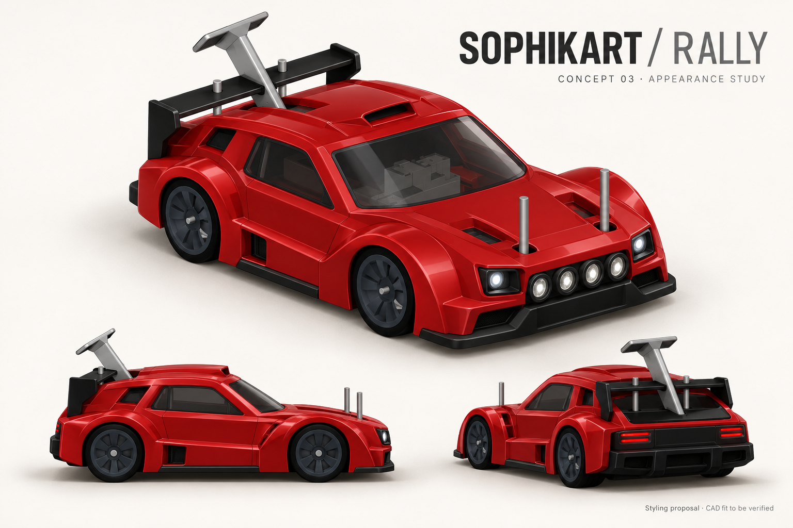
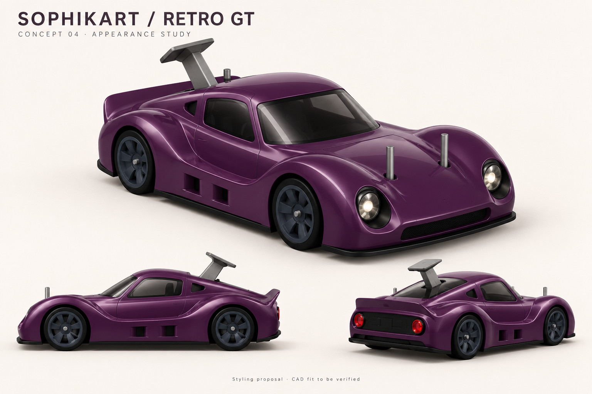

Small scale.
Track
attitude.
A new exterior for the MEV RC platform. Explore the Track concept, from styling study to working CAD.

Loading 3D model…
The original
character.
Original geometry. The supplied body panels, wheels and trim.

Original
The original body panels, wings, bumpers, tires and rims retain their shape. The original shape and all internal geometry are preserved.
Color-only STEP · All 143 components verified unchanged
Explore the refined originalThe Track
direction.
A low nose. Wide wheel arches. A prominent rear wing.
The fitted Track exterior with separate lamp parts.

Closer to the reference
The CAD headlights now use tapered dark housings and narrow white light strips in place of the earlier blue panels. The model follows the reference's styling while retaining the original chassis proportions.
Explore the revised CADA Formula
silhouette.
Exposed wheels. A tapered nose. Sculpted sidepods.
A new direction for Sophikart.

Formula
A compact open-wheel body with a broad front wing, slim central nose, sculpted sidepods, a small cockpit recess, and a tall rear wing. Its wings and exposed wheels distinguish the Formula design.
CAD appearance prototype · Motion clearance pending
Explore the Formula CADThe Rally
direction.
An angular coupe shell with flared arches, four auxiliary lamps, black window regions, and a compact spoiler.
Split bodywork around the original chassis.

Rally
An angular coupe shell with flared arches, four auxiliary lamps, black window regions, and a compact spoiler. Openings keep the original camera, mounting posts, and wheels clear. The shell adapts the approved styling to the fixed platform.
Static CAD checks · Physical fit and dynamic travel testing required
Explore the Rally CADView approved styling reference

Styling inspiration. The CAD above includes adaptations required by the original hardware.
The Retro GT
direction.
A rounded coupe shell with circular headlights and tail lamps, a curved roof, and a compact ducktail.
Split bodywork around the original chassis.

Retro GT
A rounded coupe shell with circular headlights and tail lamps, a curved roof, and a compact ducktail. Openings keep the original camera, mounting posts, and wheels clear. The shell adapts the approved styling to the fixed platform.
Static CAD checks · Physical fit and dynamic travel testing required
Explore the Retro GT CADView approved styling reference

Styling inspiration. The CAD above includes adaptations required by the original hardware.
Exterior parts.
Ready for your mounting design.
Explore and download the printed outer shell sections and visible lamp pieces.
Chassis, posts, clamps, retainers and fasteners are omitted.
- Exterior print pieces
- 7
- Largest part span
- —
Shell and lamp pieces
Exterior part sizes and files
| Part | X × Y × Z, mm | Files |
|---|
Mounting left to you. Shell clearance openings are retained where they were part of the supplied fit geometry; adapt or close them to suit your own mounting design.
Take the
design further.
Download the exterior shell files for each design. Mounting hardware and chassis are omitted.
Four redesigned cars · shell panels and visible lamps · mounting left to you
OriginalSupplied CAD and color-only finish
TrackExterior panels and visible lamps · mounts omitted
FormulaExterior panels and visible lamps · mounts omitted
RallyExterior panels and visible lamps · mounts omitted
Retro GTExterior panels and visible lamps · mounts omitted
Where the project stands
Exterior-only packages contain shell panels and visible lamp pieces. The chassis, body posts, clamps, lamp retainers and fasteners are not included. Shell openings from the previous chassis-fit geometry are retained for your mounting design. The supplied Original STEP remains unchanged.
- Wheelbase
- 209.4 mm
- Printed exterior parts
- 17
- Preserved components
- 127
- CAD format
- STEP